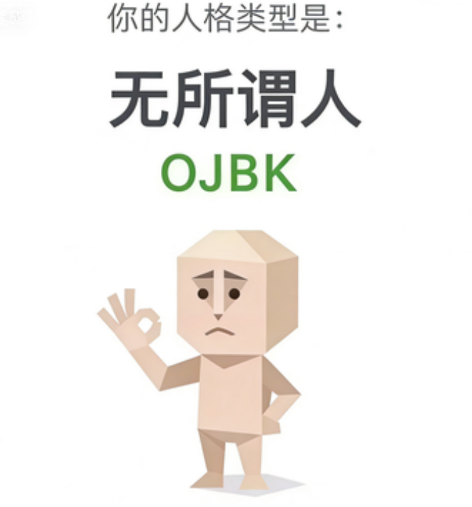

OJBK（无所谓人）
我说随便，是真的随便。
让我们直面这个词的粗犷本质：OJBK。这已经不是一种人格，而是一种统治哲学。当凡人面临"中午吃米饭还是面条"的世纪抉择时，大脑在激烈燃烧卡路里；而OJBK人格，会用一种批阅奏章般的淡然，轻飘飘地吐出两个字：都行。这不是没主见，这是在告诉你：尔等凡俗的选择，于朕而言，皆为蝼蚁。为什么不争执？因为跟草履虫辩论宇宙的未来毫无意义。为什么不较真？因为帝王不会在意脚下的尘埃是往左飘还是往右飘。

我说随便，是真的随便。
让我们直面这个词的粗犷本质：OJBK。这已经不是一种人格，而是一种统治哲学。当凡人面临"中午吃米饭还是面条"的世纪抉择时，大脑在激烈燃烧卡路里；而OJBK人格，会用一种批阅奏章般的淡然，轻飘飘地吐出两个字：都行。这不是没主见，这是在告诉你：尔等凡俗的选择，于朕而言，皆为蝼蚁。为什么不争执？因为跟草履虫辩论宇宙的未来毫无意义。为什么不较真？因为帝王不会在意脚下的尘埃是往左飘还是往右飘。
